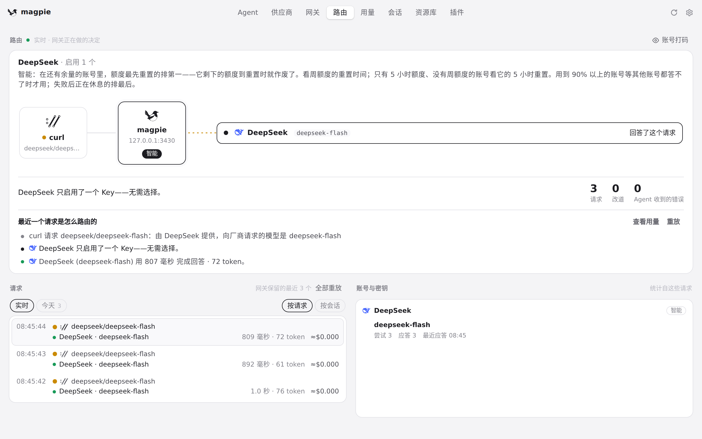
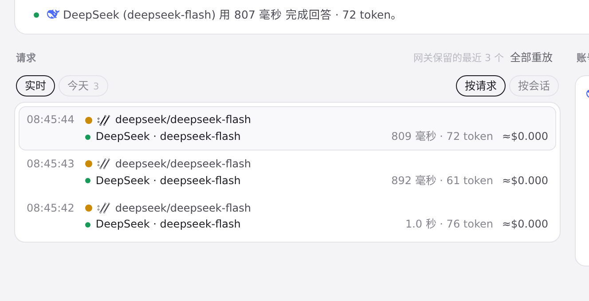
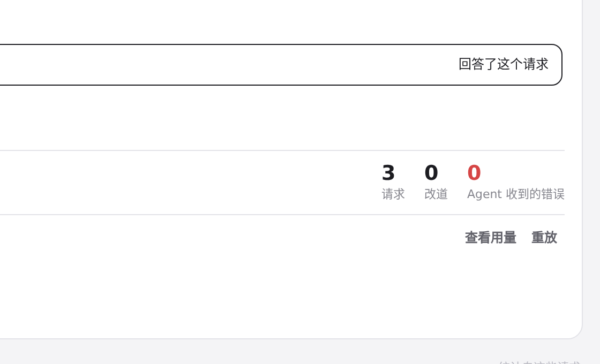
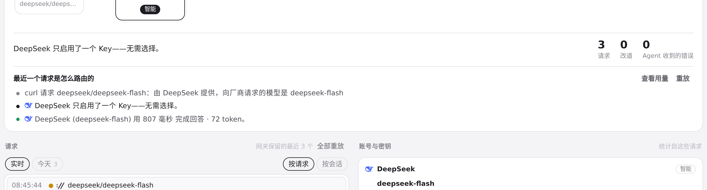
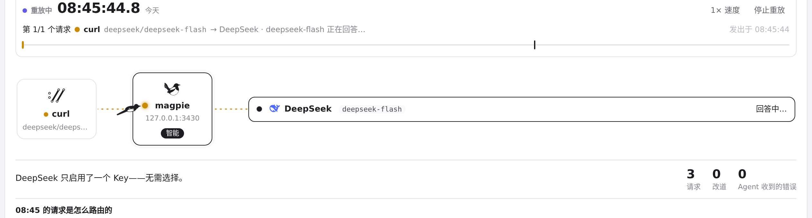
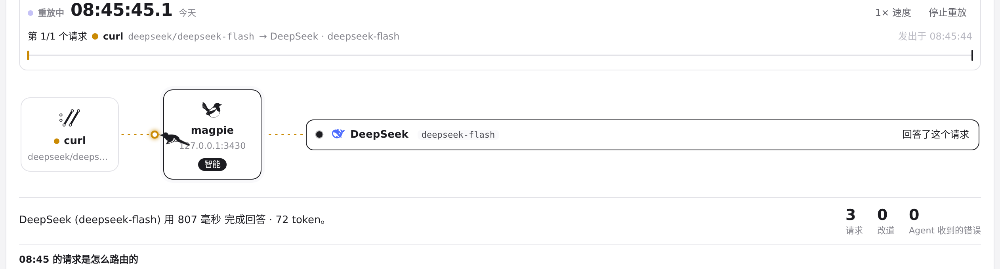

#772 界面预览
commit 0637d6b · 回到 PR · 路由页把「已开始回答、随后中断」的请求（状态码 200 却带 error/fail）统一按失败处理：请求行不再显示成绿色成功、点「Agent 收到的错误」统计能选中它、swap/routed 标记只在真正应答的尝试上出现，页面和 Agents 面板的重放动画也把这类尝试回放为失败。
红线是鼠标走过的轨迹，红色圆环是一次点击；底部文字是这一步在做什么。空格暂停，← → 逐段查看。

请求行与「错误」统计的判定 · 路由页：舞台、统计与最近一个请求的过程

请求行与「错误」统计的判定 · 请求列表：每行的状态点、来源与「供应商 · 模型」

请求行与「错误」统计的判定 · 点击统计后的统计条与请求列表

请求行与「错误」统计的判定 · 该请求的路由过程：每一步是否算应答

重放动画 · 重放进行中：请求从来源流向网关与账号

重放动画 · 重放结束后的舞台与账号点